Six panels per function. Top row: accuracy. Bottom row: loss.
Training / validation use epochs 1–50. Test panels use seeds 0–4 and show only the final evaluation after epoch 50.
Candidate 13, seed 1 has no test evaluation because training failed.
(erf(x)*sigmoid(sinh(x)))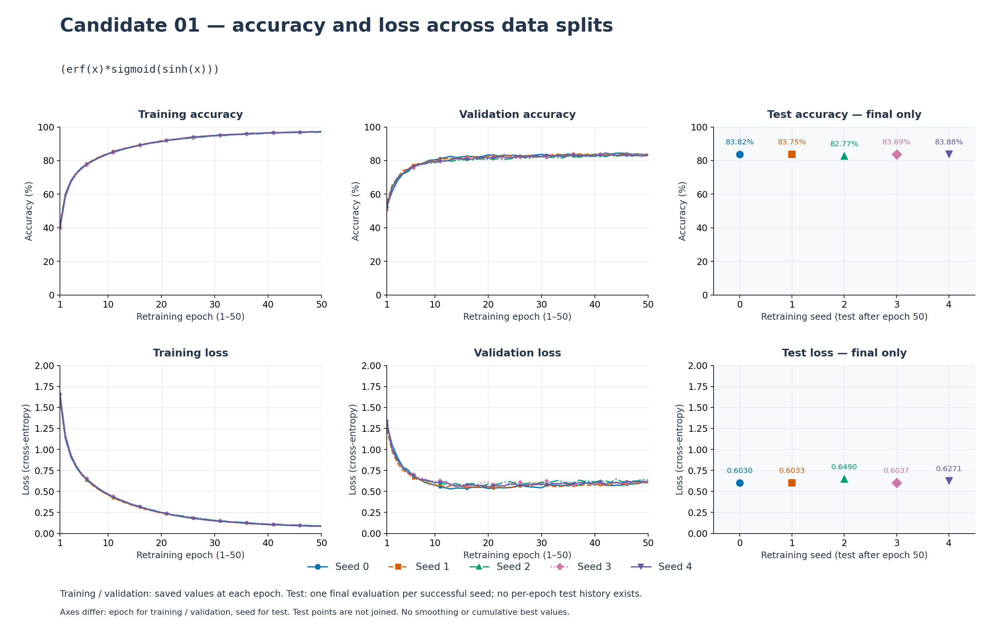
(sigmoid(x)*erf(erf(x)))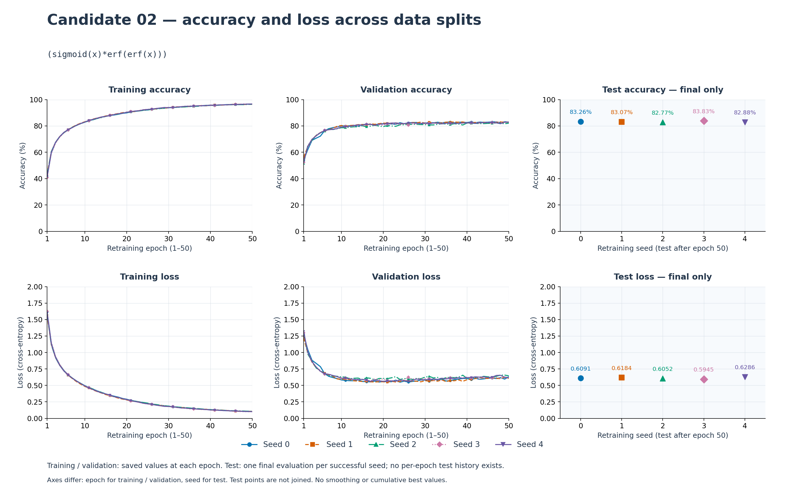
(atan(x)*sigmoid(sinh(x)))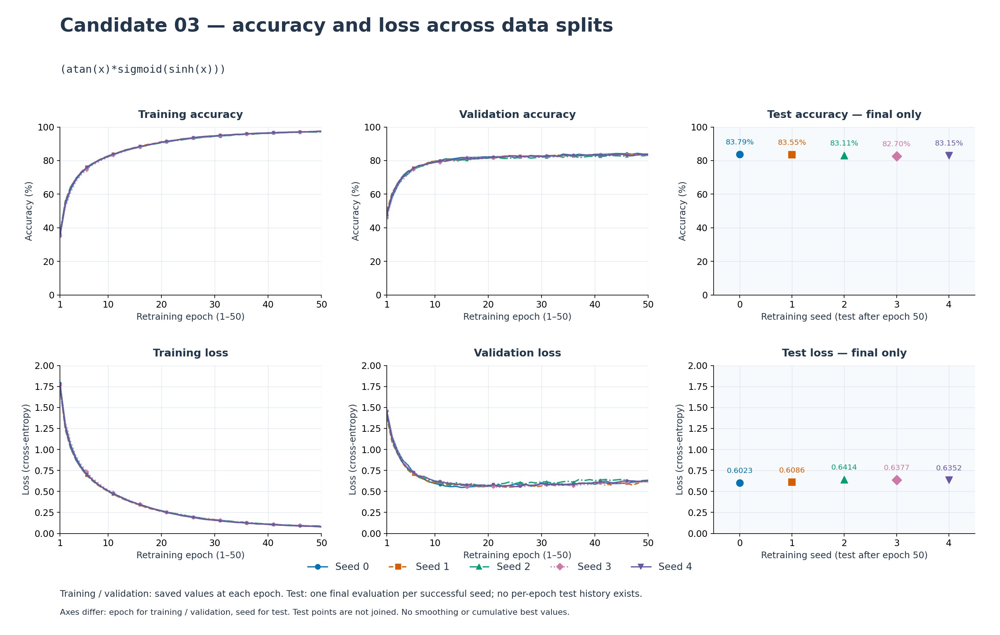
(asinh(x)*sigmoid(sinh(x)))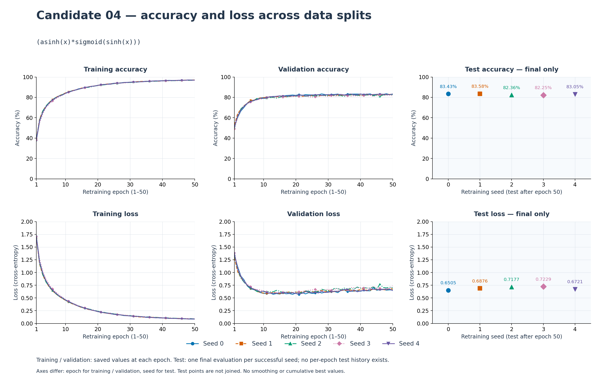
(sigmoid(x)*erf(sin(x)))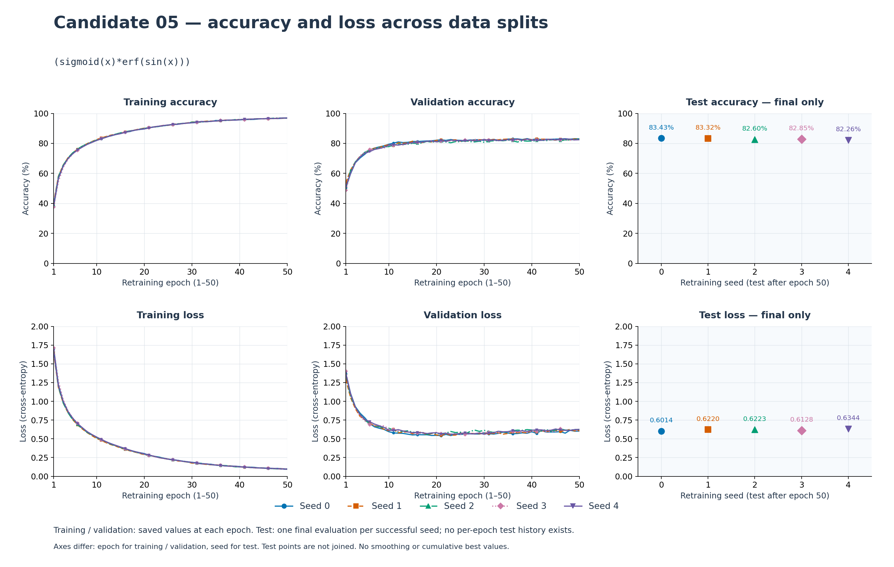
(asinh(x)*sigmoid(x))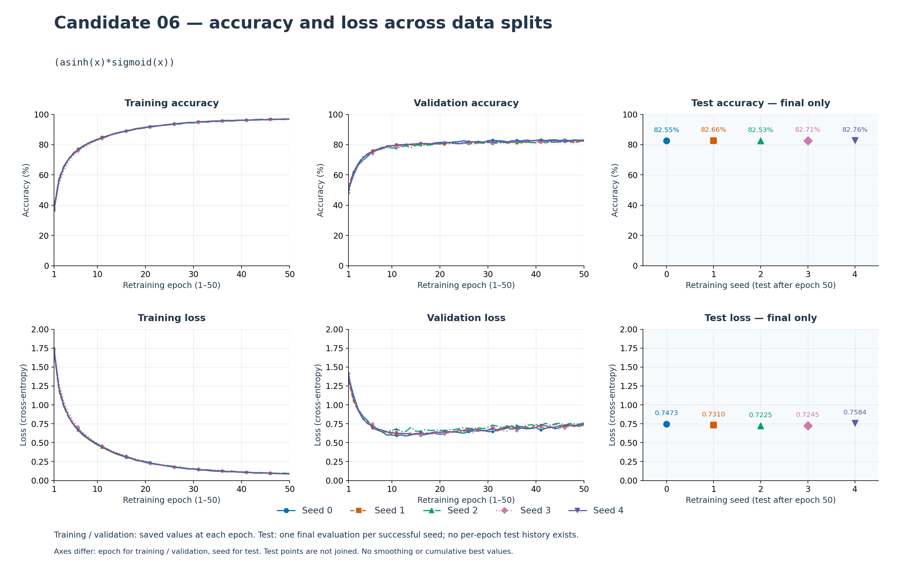
(sigmoid(x)*erf(x))(sigmoid(x)*erf(sinh(x)))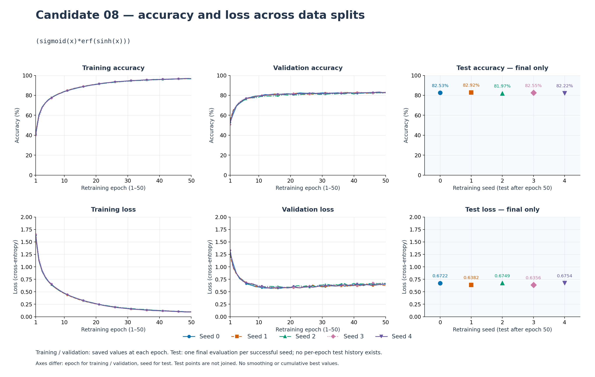
max(min((exp(x)*erf(tanh(x))),0),(x*sigmoid(max(x,0))))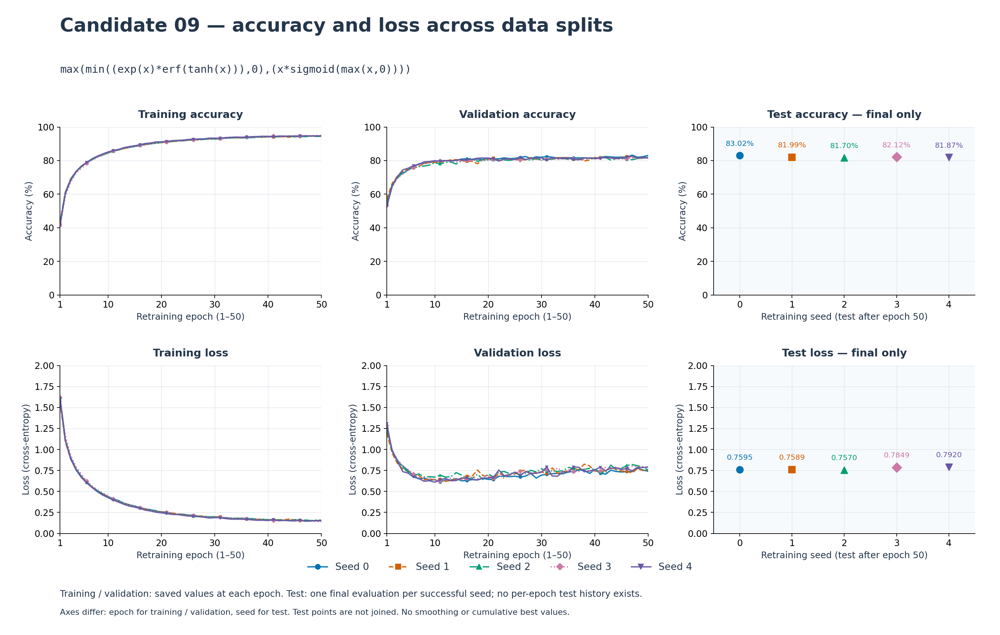
(erf(x)*sigmoid(x))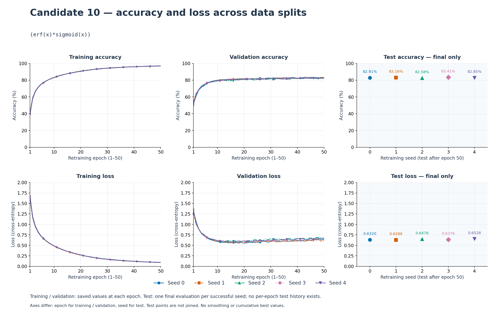
max(min((log(1+exp(x))*erf(x)),0),min(tanh(x),sin(x)))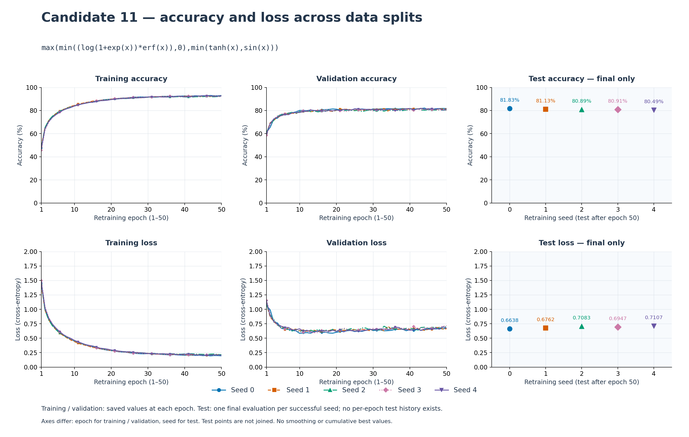
(max(min(sin(x),0),x)*erf(sigmoid(x)))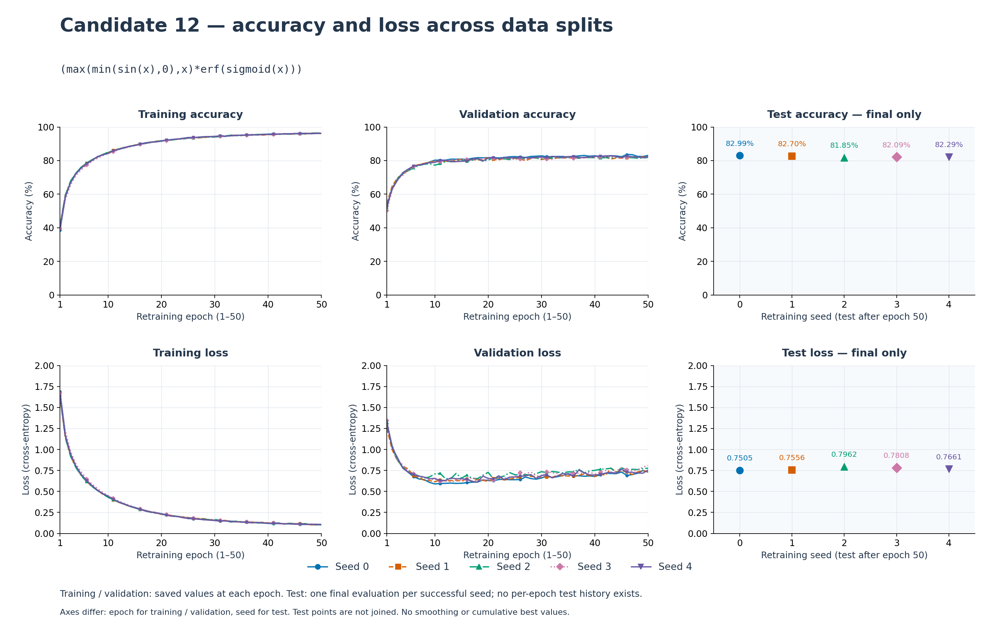
((atan(x)*min(x,0))+tanh(x))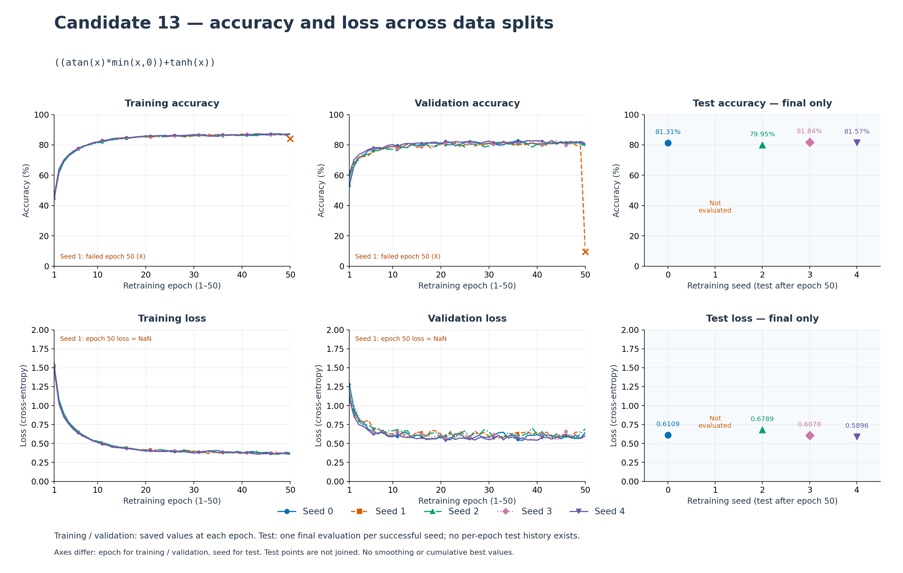
min((log(1+exp(x))*erf(x)),(atan(x)*erf(atan(x))))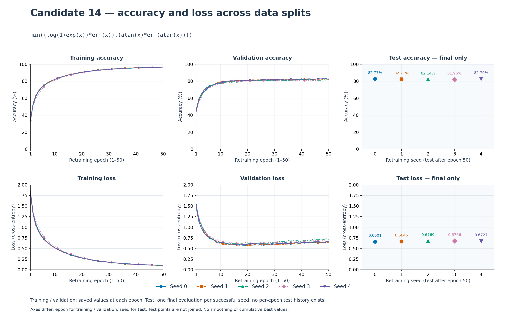
(sin(x)*sigmoid(asinh(x)))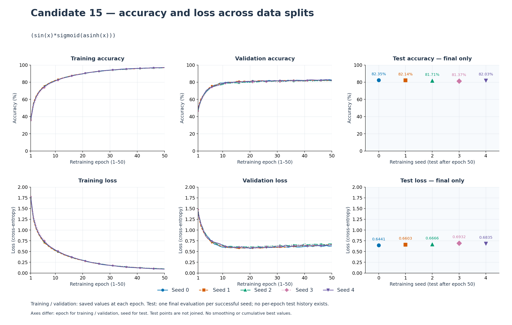